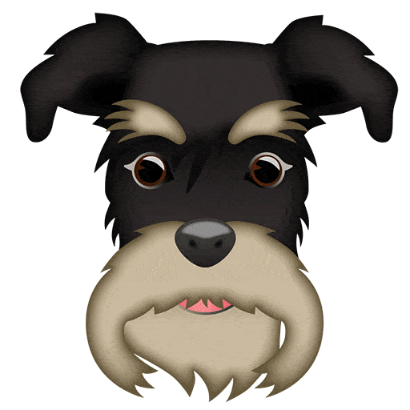

| Tipos de Cuidados |
Recomendaciones |
| Pelaje |
Entre los cuidados imprescindibles es necesario destacar el cepillado, que deberá llevarse a cabo un mínimo de 2 veces por semana. |
| Alimentación |
Los schnauzer pueden ser un poco más sensibles del estómago que otras razas, especialmente porque suelen comer más de la cuenta si no establecemos rutinas y horarios de alimentación. Una dieta equilibrada es fundamental para evitar el exceso de peso en el animal y también enfermedades estomacales constantes. |
| Ejercicio |
Sin importar si tienes un schnauzer miniatura o gigante, no debes descuidar el ejercicio físico, ya que aunque no requieren de paseos muy largos. |
| Adiestramiento |
Es indispensable establecer horarios y rutinas para que el animalito sepa cuándo es hora de comer, de pasear y de descansar.
Establece zonas de la casa tiene permitido estar y en cuáles debes establecer espacios fijos en los que tenga su comida, agua y cama, así se acostumbrará a estar ahí. |
| Salud |
Debes tomar en cuenta que son más propensos a desarrollar problemas de salud como sobrepeso, pancreatitis, problemas en el pelaje y la piel e incluso, dificultades para mover la cadera en el caso de los mini y los gigantes. Acude al veterinario de forma periódica, estando al día con su desparasitación y vacunación, así como con los exámenes generales por lo menos una vez al año. |
|